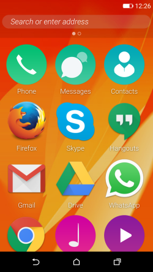
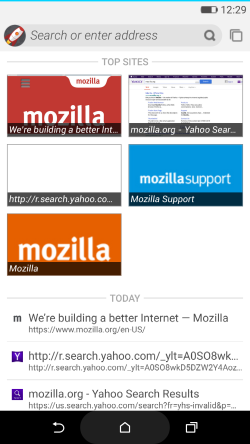

我們已於全球發佈 Firefox OS 2.5 版本，同時亦釋出早期實驗版本 ─「Firefox OS 2.5 開發者預覽 (Developer Preview)」App，可供開發者下載至 Android 裝置上一睹為快。目前最新版本的 Firefox OS 提供以下功能：
- 附加元件： 如同大家在桌面版瀏覽器所愛用的附加元件 (Add-on)，Firefox OS 附加元件現可擴增為單一 App、多個 App，甚至可為系統 App。
- 隱私瀏覽模式搭配追蹤保護 (Tracking Protection) 功能： 追蹤保護為 Firefox 的隱私新功能，讓使用者可跨多個網站控制本身瀏覽活動受到追蹤的方式。
- Pin the Web： 「釘選 Web (Pin the Web，暫譯)」可除去 Web App 與網站之間的人為差異，讓你直接將網站或網頁釘選到自己的主畫面上，以方便後續使用。
若要了解此版本的所有特色，請參閱Firefox OS v2.5。
Firefox OS 2.5 開發者預覽版就是 App，不需重新刷機或取代既有的 Android 系統，卻是在 Android 裝置上提供額外的主畫面以利大家體驗。若你有興趣嘗試，就立刻用自己的 Android 裝置造訪 Firefox OS 2.5 Developer Preview。

主畫面上的 Android Apps 與 Web App
Firefox OS 行事曆搭配 Android 的瀏覽列

Firefox OS 瀏覽器首頁
什麼是 Firefox OS 2.5 開發者預覽版？
你一定想問該如何參與 Firefox OS 開放源碼專案？目前仍是只能透過特定硬體 (如 Flame 手機) 下載最新版 Firefox OS，但我們現正努力讓更多人能輕鬆取得 Firefox OS。任何人都能到Firefox OS Participation Hub 取得最新的 Firefox OS 相關資訊。B2G-installer 附加元件則可讓你將完整的 Firefox OS 刷到 Android 裝置之上 (特別說明：Firefox OS 仍屬開發階段。請勿期待系統能完全不出錯或可穩定執行)。
若以現有硬體刷機，也可能遺失使用者資料或找不到你所慣用的 Android App。且刷機亦必須承擔裝置變磚的風險。Firefox OS 2.5 開發者預覽版則是以 Firefox OS 的Gaia (UI) 層取代 Android 主畫面，避免上述的潛在風險。你可使用 Firefox OS 並同時完整保留自己的 Android App。Firefox OS 2.5 開發者預覽版將能接觸全世界更多 Open Web 的開發者、測試人員、翻譯人員、擁護群眾。
如果你急於一窺 Firefox OS 或體驗新功能，則 Firefox OS 2.5 開發者預覽版也可輕鬆讓你入門並省去所有麻煩。只要下載此 App，不需刷機即可體驗 Firefox OS 的功能。一旦體驗完畢，也只要像其他 App 一樣將之移除即可。如果你意欲貢獻程式碼或回報錯誤，則此 App 也能讓你輕鬆參與。
目的為何？
如同其他的完整作業系統，Firefox OS 亦具備本身的作業管理程式、公用程式、瀏覽按鈕、相關設定，還有更多。而要附在 Android 之上執行，則代表這些 OS 元素可能會與相同的 Android 系統功能衝突。當初設計 Android 啟動器之時，並未考量到要取代這些 OS 功能。因此我們盡可能佈署了多樣的迂迴替代方案，藉以提升整體的使用者經驗。舉例來說，Android 主要的瀏覽方式之一就是「退回」鍵；但 Firefox OS 則無。我們正努力減少類似的問題，因此目前的 Firefox OS 2.5 開發者預覽版既然歸為實驗性質，也就難免發生錯誤。Mozilla 希望能集思廣益，透過大家發現更多問題並修復錯誤。
在 Firefox OS 2.5 開發者預覽版上進行開發
不論是要滿足好奇心、測試自己的想法、提升效能以貢獻專案，或是針對上述的 Android 系統功能解決衝突問題，我們都希望你盡情把玩 Firefox OS 2.5 開發者預覽版。你可到這裡找到從無到有的 App 開發指南。或可利用 Firefox 開發者 (Developer) 版本瀏覽器中的 WebIDE，直接修改 Firefox OS 開發者預覽版的 App 配置與組合。
不寫程式也能參與
就算不貢獻程式碼也同樣能參與。最簡單的方法，就是在自己的 Android 裝置上安裝 Firefox OS 2.5 開發者預覽版。一旦發現問題或任何無法運作的功能，歡迎立刻提報錯誤。另可至 Firefox OS Participation Hub 找到其他參與方式。
已支援的裝置
目前版本僅能於搭載 ARM 的裝置中運作。無法安裝於 x86 裝置之上。
最後提醒
Mozilla 很高興能發佈「Firefox OS 2.5 Developer Preview」App。我們一直努力要讓 Android 使用者獲得 Firefox OS 經驗。一如 Mozilla 的傳統，感謝社群鼎力襄助，也歡迎任何有建設性的反饋意見。
如果有新款硬體或裝置上的 Firefox OS 執行問題，可透過dev-fxos 郵件群組或 IRC 上的 #fxos 踴躍提出。
原文連結：Firefox OS 2.5 Developer Preview, an experimental Android app